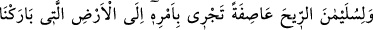
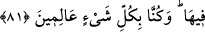

81. Süleyman’ın emrine de kasırga (gibi esen) rüzgârı verdik; onun emriyle
içinde bereketler yarattığımız yere doğru eserdi. Biz herşeyi biliriz.
“Süleyman’ın emrine de kasırga (gibi esen) rüzgârı verdik;” Dâvud (a.s.)’a dağların
ve kuşların boyun eğdirilmesi ile Süleyman (a.s.)’a rüzgarın boyun eğdirilmesi arasında
fark vardır. Süleyman (a.s.)’a rüzgarın ve diğer eşyanın boyun eğmesi, ona tam olarak
boyun eğmek, emir ve yasaklarını yerine getirmek, hükümranlığı altında mağlub olmak
yoluyla olmuştur. Dağların ve kuşların Dâvud (a.s.)’a boyun eğdirilmesi ise bu derecede
değil, bilakis Allah’a kullukta ona tâbi olma, uyma yoluyladır.
Hz. Süleyman’a boyun eğen rüzgar, şiddetli bir rüzgar olarak vasfedilmiştir. Bu, Hz.
Süleyman’ın tahtını az zamanda pek uzaklara götürmesi bakımındandır. Aslında o, esinti
gibi yumuşaktı. Süleyman (a.s.)’a itâat edip onun dilediği ve istediği şekilde esmesinin
yanında hem kendisinin yumuşak olması hem yaptığı iş bakımından kasırga gibi şiddetli
olması, mûcize üstüne mûcize idi.
“Onun emriyle” irâdesiyle “içinde bereketler yarattığımız yere” yâni Şam’a “doğru
eserdi.” Rüzgar Süleyman (a.s.)’ı sabah Şam’dan alır ve öğleye kadar Şam ile arasında
bir aylık yürüyüş mesafesi bulunan yeryüzünün başka bir yerine götürürdü. Sonra da
öğleden sonra gün batımı sırasında onu Şam’a geri getirirdi. Nitekim Allah Teâlâ:
“Süleyman’a da, sabah gidişi bir ay(lık mesafe), akşam dönüşü bir ay(lık mesafe)
olan rüzgarı boyun eğdirdik.” (Sebe’, 34/12) buyurmuştur.
Mukâtil şöyle der: “Şeytanlar, Süleyman (a.s.) için ipek üzerine altından yapılmış bir
fersah genişlikte bir halı yaptılar. Halının ortasına altından bir kürsü konur, Hz.
Süleyman buna otururdu. Onun etrafına da altından ve gümüşten kürsüler yerleştirilirdi.
Peygamberler altından kürsülere, âlimler de gümüşten kürsülere otururlardı. Onların
etrafını da insanlar çevrelerdi. İnsanların etrafında da cinler ve şeytanlar bulunurdu.
Onları da kuşlar kanatlarıyla gölgeler ve üzerine güneşin ışıkları düşmezdi. Sabâ
rüzgarı o halıyı bir aylık mesafeye, sabahtan öğleye kadar götürür, öğleden sonra
akşama kadar da geri getirirdi.
Süleyman (a.s.) gazâdan pek az geri kalmış bir kimsedir. Herhangi bir yerde bir kral
olduğunu duyarsa, derhal ona gider ve kendisini Hakk’a çağırırdı.
Kâşifî der ki: “Telhîs’te şöyle rivâyet olunur: “Şam’da Tedmur adında bir şehir vardı.
Şeytanlar, Süleyman (a.s.) için binâ etmişti. Sabahleyin oradan çıkar, akşam namazından
sonra oraya geri dönerdi.” Muhtâru’l-kısas’taki rivâyete göre ise sabah erkenden
Tedmur’dan çıkar, Fars topraklarında bulunan Istahr’da kuşluk uykusunu uyurdu. Akşam
Kabil’e gider, orada gecelerdi. Ertesi gün Kabil’den çıkar, kuşluk vakti Istahr’da olur,